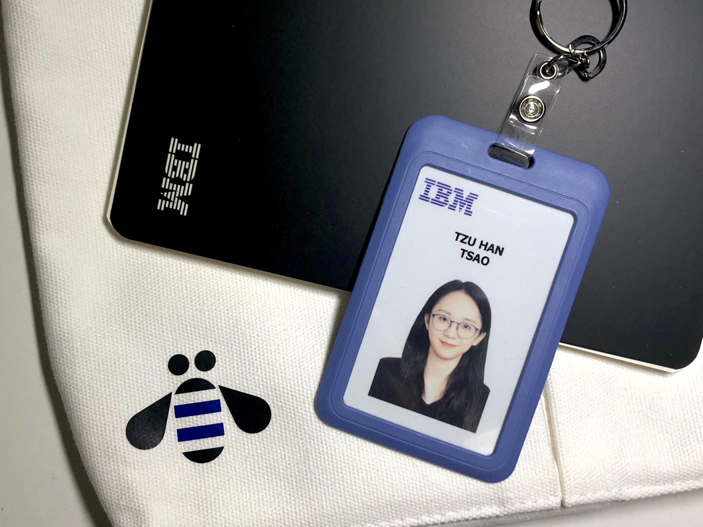

First Commercial Bank
Digital Transformation Project
IBM - IT Consulting Internship Projects
Duration: July 2022 - Aug. 2022
Role: Associate Application Consultant
Skills: Systems Analysis, Data Analysis (SQL, Excel), IT Consulting, Communication

Description
In the dynamic landscape of financial services, the First Commercial Bank, a prominent institution in Taiwan, faced challenges with its corporate internet banking (CIB) service.
As an established bank, its outdated CIB system hindered its efficiency and user experience. This propelled the imperative for a comprehensive digital transformation.
Objective / Success Metrics
The primary objective of the project was to revamp the CIB system of First Commercial Bank, aiming to enhance its reliability, availability, and user experience.
Approach
-
Requirement Analysis:
By engaging directly with clients, we delved into the prevailing issues of the existing CIB system. Valuable insights were collected through client feedback, serving as the foundation for redesigning the system.
-
Systems Design and Implementation:
After analyzing the requirements, we planned the project's development trajectory, creating detailed system specifications. We actively collaborated with the development team, ensuring alignment with specifications and responsiveness to customer expectations.
-
Systems Testing and Deployment:
After development, comprehensive systems integration testing was conducted to ensure seamlessness and error-free performance. User authorization testing affirmed the integrity of access control mechanisms and user permissions.
Results
The First Commercial Bank Digital Transformation project yielded substantial outcomes:
-
Enhanced Reliability and Efficiency:
The CIB system's transformation led to a noticeable reduction in downtime, boosting overall operational efficiency and reinforcing the bank's reputation for reliability.
-
Elevated User Experience:
The redesign introduced an intuitive interface and streamlined workflows, cultivating smoother client interactions with the bank's digital services.
-
Strengthened Security Measures:
Testing validated enhanced security protocols, fortifying data protection and access controls.
-
Demonstration of Project Management and Team Collaboration:
Beyond technical accomplishments, the project underscored the importance of effective project management and seamless teamwork.
Favorable feedback from both bank management and users underscored the tangible impact of the enhanced CIB system, exemplifying the project's success. The project showcased the potential of merging technical expertise with user-centric design principles to drive transformative change within an established organizational framework.